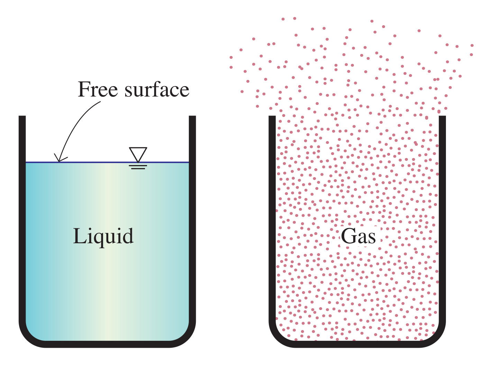
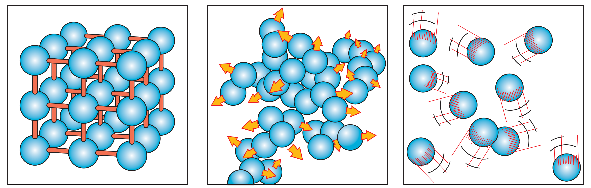
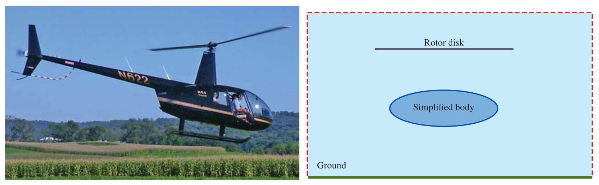

Elementary Fluid Mechanics
CE-ENGIN 357 - Fall 2024
Today
- What is a fluid?
- The fluid as a continuum
- System and control volume
- Classification of fluid flows
Material phases

A solid can resist a shear stress by a static deflection; a fluid cannot and will deform continuously under that shear stress.
Deformation of a rubber block
Normal and shear stress
Normal stress \[\sigma = \dfrac{dF_n}{dA}\] Shear stress \[\tau = \dfrac{dF_t}{dA}\]
Liquids and Gases
- Liquids will tends to retain their volume and will form a free surface
- Gases will expand until contained (e.g., walls of a container)
Cohesive forces between molecules in different phases 
Fluid or not?
Pitch drop experiment
Fluid as a continuum
- Density (mass per unit volume)?
\[\rho = \lim_{\delta V \rightarrow \delta V^{\ast}} \dfrac{\delta m}{\delta V}\]
System
A system is an arbitrary quantity of mass.
Closed system
- Fixed amount of mass
- Heat and work can cross boundaries
Control volume
An arbitrary region in space through which fluid flows.
Define the control volume
Methods of description
- Frame of reference that follows fluid particles
- Lagrangian method
- Determination of fluid properties as a function of position and time
- Eulerian method
Seven Chances (1925)

Velocity and acceleration fields
\[V(x,y,z,t) = \textbf{i} u(x,y,z,t) + \textbf{j} v(x,y,z,t) + \textbf{k} w(x,y,z,t)\]
\[\mathbf{a} = \dfrac{d \mathbf{V}}{dt} = \dfrac{\partial V}{\partial t} + u \dfrac{\partial V}{\partial x} + v \dfrac{\partial V}{\partial y} + w \dfrac{\partial V}{\partial z}\]
Modeling in engineering
Experimental vs Analytical study
Complexity and accuracy 
Problem-solving technique
- Problem statement
- Schematic
- Assumptions and approximations
- Physical laws
- Properties
- Calculations
- Reasoning, verification and discussion
Classification of fluid flows
Viscous and Inviscid regions of flow
Internal resistance of flow: viscosity
Internal and External flow
- Flow completely bounded by solid surfaces: Internal
- Flow of unbounded fluid over a surface: External
- Flow of liquids in a duct (partially filled): Open channel flow
Compressible and Incompressible flow
Laminar and Turbulent flow
Steady and Unsteady flow
- Steady: no change in properties, velocity etc. with time at a point
- Uniform: no change with location either
- Unsteady: dynamic properties, velocity etc. with time
- Transient: developing flows